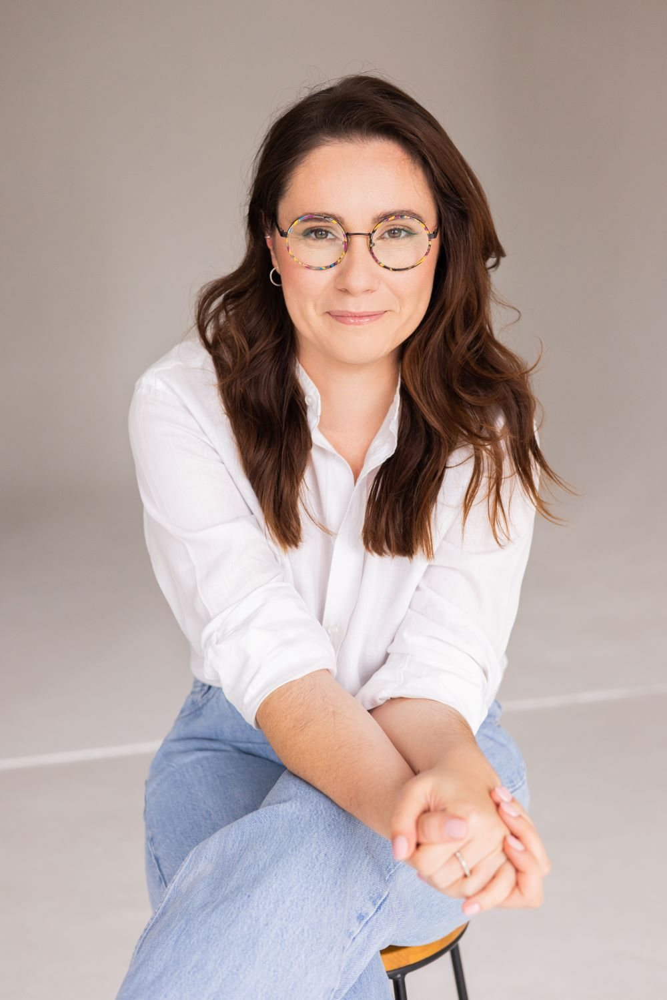
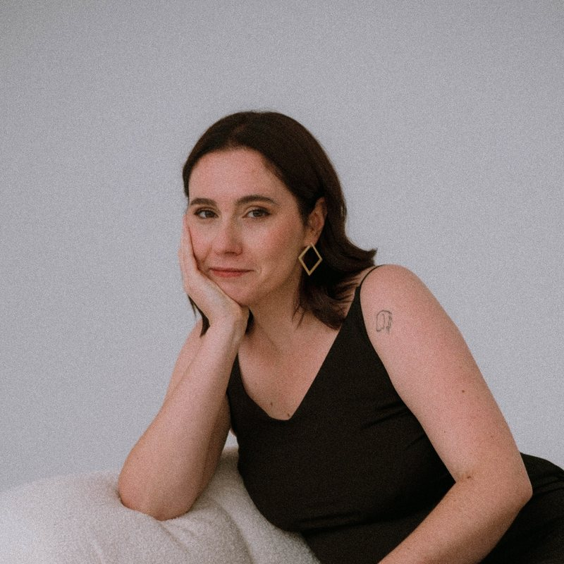
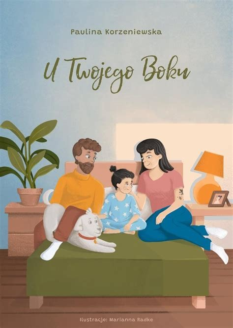
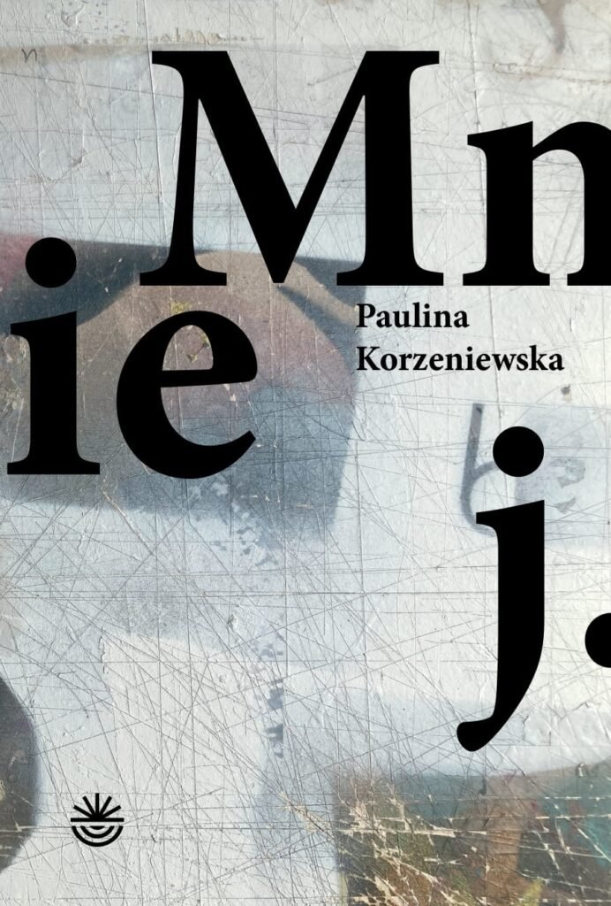
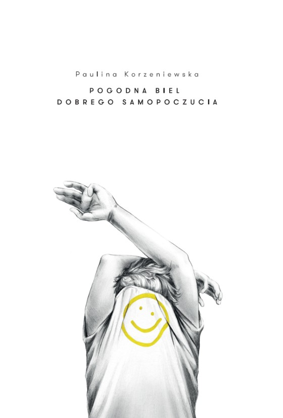
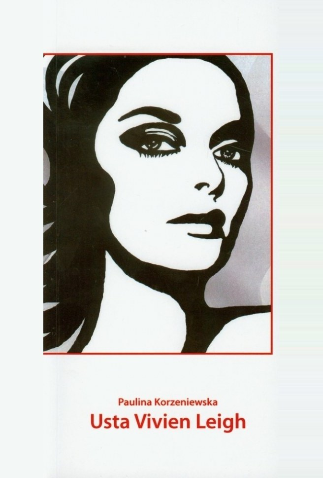

Paulina Korzeniewska
Scenarzystka, poetka, tłumaczka

“The business
of words
keeps me awake.”
O mnie

Jestem scenarzystką, poetką i tłumaczką, doktorką nauk humanistycznych i wykładowczynią akademicką. Napisałam trzy tomy poetyckie oraz książkę dla dzieci, a swoje projekty filmowe rozwijałam w ramach branżowych programów scenariuszowych.
Twórczość
Dla dzieci

Kup terazU Twojego Boku
„U Twojego Boku” to opowieść dla dzieci i rodzin po rozstaniu. Pokazuje, że nawet w zmieniającej się rzeczywistości, dzięki nierozerwalnej więzi z rodzicami, dzieci mogą znaleźć siłę i ciepło.
Leo ma bujną wyobraźnię, włosy związane na czubku głowy, dwa domy i bardzo wyjątkowy sen. Odwiedza go pewien tajemniczy gość i opowiada mu trzy krótkie historie, które wiele zmienią w życiu tego wyjątkowego chłopca.
Ta opowieść nie tylko rozświetli dziecięce serca, ale także stanie się cennym narzędziem dla rodzin, które chcą wspólnie znaleźć radość i spokój w nowym rozdziale swojej historii.
Poezja

Rok wydania: 2022Kup teraz

Rok wydania: 2016Kup teraz

Rok wydania: 2011Kup teraz
Scenariusze: programy rozwojowe i wyróżnienia
- 2025Script FiestaFinalistka
- 2025Final Draft Special Award
- 2025Young Horizons Lab
- 2026Scenarzystki na HoryzoncieNetflix × Nowe Horyzonty
- 2026Warsaw NextWarsaw Film Festival
- 2026ScriptzONAFinalistka
Tłumaczenia
Od ponad dekady zajmuję się przekładem audiowizualnym. W moim portfolio znajduje się ponad 100 tytułów przygotowanych dla platform streamingowych. Specjalizuję się w tłumaczeniu i opracowywaniu napisów do filmów fabularnych, seriali i dokumentów oraz przekładzie list dialogowych.
Jeśli chcesz ze mną pracować, odezwij się.
Napisz do mnie
Współpraca
- Wydawnictwa i spotkania autorskie
- Producenci i studia filmowe
- Zlecenia tłumaczeniowe